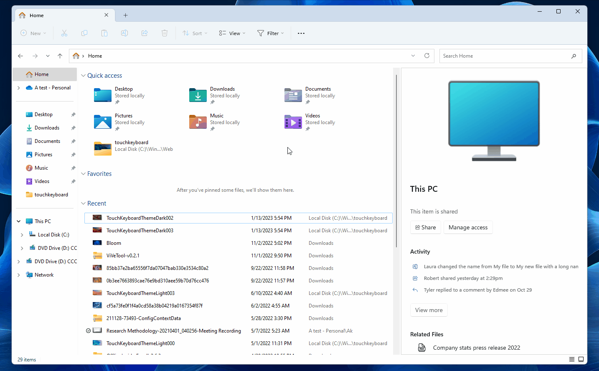

Windows 23H2 Update
As technology continues to evolve, the software that powers our devices must also keep up. That's why Microsoft releases updates to its operating system, Windows. The latest of these updates is the Windows 23H2 update, which offers a range of new features and improvements. This update has a codename: Sun Valley 3.
Whats New?
According to The Verge, Microsoft is working on bringing the ChatGPT-like functionality integrated into Bing to its Office apps. The article shows a sidebar within the likes of Word and Outlook, which can compose articles or emails in a particular style and with a specific purpose.

With the release of Windows 11, Microsoft has unveiled a fresh new look for one of its most iconic tools: the Explorer. The redesign aims to make the Explorer more modern, streamlined, and intuitive, while retaining its familiar functionalities. The first thing that users will notice about the new Explorer is its updated visual design. The interface now sports a clean and minimalist look, with rounded corners and a new set of icons that align with the overall aesthetic of Windows 11. The new icons are more vibrant and visually appealing, making it easier to identify files and folders at a glance.

Image: WindowsLatest.com
There will be a Lighting setting that recently teased by Albacore.